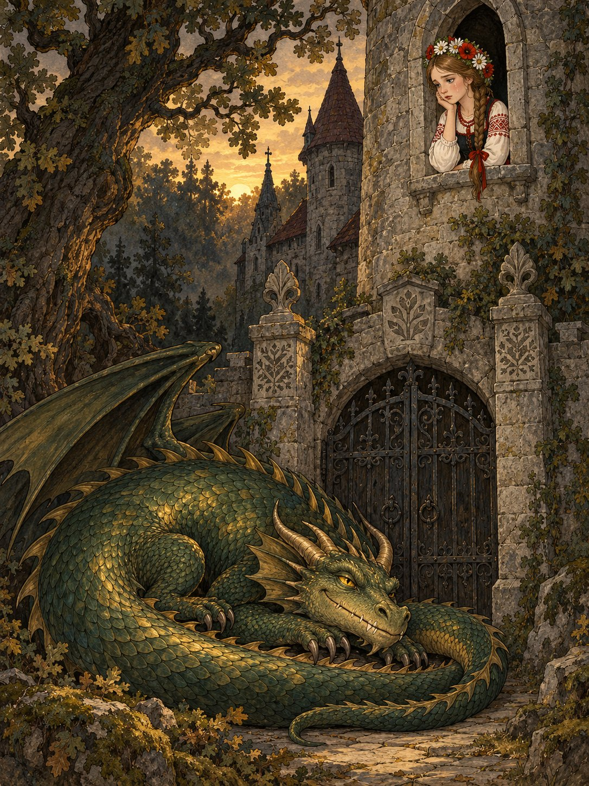

Ішла сестра борозною, співала пісні й не помітила, як опинилася в глухому лісі. Дерева стояли все вищі й темніші, аж поки серед них не постав сірий палац із залізними воротами.
Тут вийшов Змій, схопив дівчину й замкнув у високій світлиці. Скільки вона не плакала, скільки не просилася додому, Змій лише посміхався.
А брати в полі чекали-чекали обіду, та так і не дочекалися. Під вечір вони стривожилися й пішли шукати сестру.
